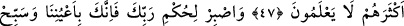

RABBİNİN HÜKMÜNE
SABRET
44. Gökten düşen bir kütle görseler «Üst üste yığılmış bulutlardır» derler.
45. Artık çarpılacakları günlerine kavuşuncaya kadar onları kendi hallerine
bırak.
46. O gün planları kendilerine hiçbir fayda vermez ve yardım da görmezler.
47. Şüphesiz zulmedenlere, ondan başka da azap vardır. Fakat çokları bilmezler.
48. Rabbinin hükmüne sabret. Çünkü sen gözlerimizin önündesin. Kalktığın
zaman da Rabbini hamd ile tesbih et.
49. Gecenin bir kısmında ve yıldızların batışından sonra da O’nu tesbih et.
“Gökten düşen bir kütle görseler, ” kendilerine azap için inen bir parçanın düştüğünü
görseler, demektir. Aynu’l-maânî’de; azaptan bir parçanın, gökten bir parçanın; yahut
göğün bir kısmının düştüğünü görseler, şeklindedir.
“Kesf, güneş tutulması gibi bir tür örtme olayıdır. Kâmus’ta kisfe kelimesinin, bir
şeyden parça anlamında olduğu, çoğulunun ise “kisf ve kisef” olarak geldiği beyân
edilir. Muhtar’da da “kesf” ve “kisfe”nin aynı anlamda olduğu belirtilmiştir.
Aşırı isyan ve inadlarından dolayı, bu “üst üste yığılmış” katı yahut küme şeklindeki
“bulutlardır, derler.” Yâni geçmişte de onlar böyle; “Yahut zannettiğin gibi
üzerimize gökten parçalar düşürmelisin” (el-İsra 17/92) demişlerdi. Gelecekte de
üzerlerine bu parçaları düşürsek yine inadla ve isyanla benzer şeyler diyeceklerdir.
Yâni
onlar:
“Bu
gök
parçaları
bize
yağmuru
yağdırmak
üzere
kümelenmiştir”diyebilirler ve o parçaların azab için ineceğini asla tasdik etmezler.
et-Te’vîlâtü’n-Necmiyye’de de bu ifâde, “onlar her türlü azap emâresini görseler de
buna inanmazlar” şeklinde tefsir olunmaktadır. Bu, “Onlara gökten bir kapı açsak da
oraya çıkacak olsalardı” (el-Hicr 15/14) âyetiyle benzer mânâda olup, “görmeleri”nin,
gerçek iyan ve müşâhede olması şart değildir.